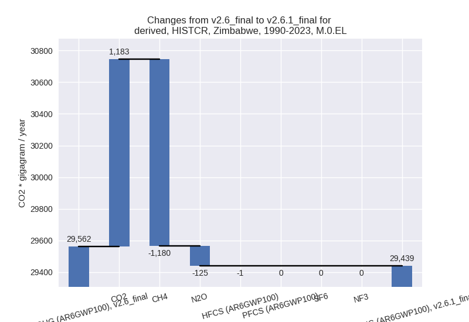
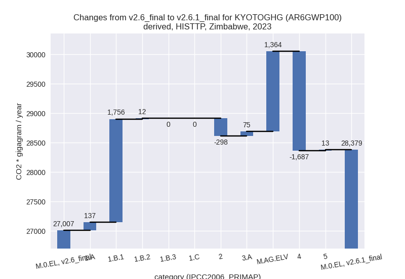

Changes in PRIMAP-hist v2.6.1_final compared to v2.6_final for Zimbabwe
2025-03-19
Johannes Gütschow
Change analysis for Zimbabwe for PRIMAP-hist v2.6.1_final compared to v2.6_final
Overview over emissions by sector and gas
The following figures show the aggregate national total emissions excluding LULUCF AR6GWP100 for the country reported priority scenario. The dotted linesshow the v2.6_final data.

The following figures show the aggregate national total emissions excluding LULUCF AR6GWP100 for the third party priority scenario. The dotted linesshow the v2.6_final data.
Overview over changes
In the country reported priority scenario we have the following changes for aggregate Kyoto GHG and national total emissions excluding LULUCF (M.0.EL):
- Emissions in 2023 have changed by 13.1%% (3393.02 Gg CO2 / year)
- Emissions in 1990-2023 have changed by -0.4%% (-122.66 Gg CO2 / year)
In the third party priority scenario we have the following changes for aggregate Kyoto GHG and national total emissions excluding LULUCF (M.0.EL):
- Emissions in 2023 have changed by 5.1%% (1371.62 Gg CO2 / year)
- Emissions in 1990-2023 have changed by -3.2%% (-975.54 Gg CO2 / year)
Most important changes per scenario and time frame
In the country reported priority scenario the following sector-gas combinations have the highest absolute impact on national total KyotoGHG (AR6GWP100) emissions in 2023 (top 5):
- 1: M.AG.ELV, CH4 with 3992.46 Gg CO2 / year (327.1%)
- 2: 1.A, CH4 with -3111.90 Gg CO2 / year (-70.0%)
- 3: 1.A, CO2 with 3050.67 Gg CO2 / year (36.5%)
- 4: 1.A, N2O with -380.36 Gg CO2 / year (-57.8%)
- 5: 2, CO2 with -305.77 Gg CO2 / year (-35.6%)
In the country reported priority scenario the following sector-gas combinations have the highest absolute impact on national total KyotoGHG (AR6GWP100) emissions in 1990-2023 (top 5):
- 1: 1.A, CO2 with 1381.53 Gg CO2 / year (16.4%)
- 2: 1.A, CH4 with -1311.14 Gg CO2 / year (-46.8%)
- 3: M.AG.ELV, CH4 with 204.00 Gg CO2 / year (4.5%)
- 4: 1.B.1, CO2 with -171.40 Gg CO2 / year (-100.0%)
- 5: 1.A, N2O with -143.26 Gg CO2 / year (-33.8%)
In the third party priority scenario the following sector-gas combinations have the highest absolute impact on national total KyotoGHG (AR6GWP100) emissions in 2023 (top 5):
- 1: 4, CH4 with -1687.29 Gg CO2 / year (-52.8%)
- 2: 1.B.1, CH4 with 1009.09 Gg CO2 / year (633.4%)
- 3: 1.B.1, CO2 with 747.14 Gg CO2 / year (317.8%)
- 4: M.AG.ELV, CH4 with 739.03 Gg CO2 / year (327.1%)
- 5: M.AG.ELV, N2O with 577.43 Gg CO2 / year (15.9%)
In the third party priority scenario the following sector-gas combinations have the highest absolute impact on national total KyotoGHG (AR6GWP100) emissions in 1990-2023 (top 5):
- 1: 4, CH4 with -1227.45 Gg CO2 / year (-50.9%)
- 2: 1.B.1, CH4 with 97.55 Gg CO2 / year (15.7%)
- 3: 1.B.1, CO2 with 56.96 Gg CO2 / year (33.2%)
- 4: M.AG.ELV, CH4 with 33.95 Gg CO2 / year (2.9%)
- 5: 1.A, CH4 with 31.59 Gg CO2 / year (1.4%)
Notes on data changes
Here we list notes explaining important emissions changes for the country.
- CRT data from BTR1 has been included. If covers 1990-2022, but only
for the energy sector. It replaces data from BUR1 and NC4 which we still
use for all other sectors.
- The highest change for 2023 is in CH4 from M.AG.ELV and due to FAO growth rates replacing numerical extrapolation of the highly fluctuating data.
- Most other changes are in the energy sector and come from the CRT data.
- Lower emissions in IPPU, CO2 come from updated Andrew cement emissions.
- Changes in the TP time-series come from updated EDGAR and FAO data. FAO has adjusted data for the latest years while EDGAR has updated full time-series with the main change coming from the waste sector.
Changes by sector and gas
For each scenario and time frame the changes are displayed for all individual sectors and all individual gases. In the sector plot we use aggregate Kyoto GHGs in AR6GWP100. In the gas plot we usenational total emissions without LULUCF.
country reported scenario
2023
1990-2023

third party scenario
2023

1990-2023
Detailed changes for the scenarios:
country reported scenario (HISTCR):
Most important changes per time frame
For 2023 the following sector-gas combinations have the highest absolute impact on national total KyotoGHG (AR6GWP100) emissions in 2023 (top 5):
- 1: M.AG.ELV, CH4 with 3992.46 Gg CO2 / year (327.1%)
- 2: 1.A, CH4 with -3111.90 Gg CO2 / year (-70.0%)
- 3: 1.A, CO2 with 3050.67 Gg CO2 / year (36.5%)
- 4: 1.A, N2O with -380.36 Gg CO2 / year (-57.8%)
- 5: 2, CO2 with -305.77 Gg CO2 / year (-35.6%)
For 1990-2023 the following sector-gas combinations have the highest absolute impact on national total KyotoGHG (AR6GWP100) emissions in 1990-2023 (top 5):
- 1: 1.A, CO2 with 1381.53 Gg CO2 / year (16.4%)
- 2: 1.A, CH4 with -1311.14 Gg CO2 / year (-46.8%)
- 3: M.AG.ELV, CH4 with 204.00 Gg CO2 / year (4.5%)
- 4: 1.B.1, CO2 with -171.40 Gg CO2 / year (-100.0%)
- 5: 1.A, N2O with -143.26 Gg CO2 / year (-33.8%)
Changes in the main sectors for aggregate KyotoGHG (AR6GWP100) are
- 1: Total sectoral emissions in 2022 are 12781.15 Gg
CO2 / year which is 44.7% of M.0.EL emissions. 2023 Emissions have
changed by -4.8% (-661.60 Gg CO2 /
year). 1990-2023 Emissions have changed by -2.7% (-322.39 Gg CO2 / year). For 2023
the changes per gas
are:

For 1990-2023 the changes per gas are:
The changes come from the following subsectors:- 1.A: Total sectoral emissions in 2022 are 12768.69
Gg CO2 / year which is 99.9% of category 1 emissions. 2023 Emissions
have changed by -3.3% (-441.59 Gg
CO2 / year). 1990-2023 Emissions have changed by -0.6% (-72.88 Gg CO2 / year). For 2023 the
changes per gas
are:
There is no subsector information available in PRIMAP-hist. - 1.B.1: Total sectoral emissions in 2022 are 12.46
Gg CO2 / year which is 0.1% of category 1 emissions. 2023 Emissions have
changed by -93.4% (-220.00 Gg CO2 /
year). 1990-2023 Emissions have changed by -94.7% (-249.52 Gg CO2 / year). For 2023
the changes per gas
are:
For 1990-2023 the changes per gas are:
There is no subsector information available in PRIMAP-hist.
- 1.A: Total sectoral emissions in 2022 are 12768.69
Gg CO2 / year which is 99.9% of category 1 emissions. 2023 Emissions
have changed by -3.3% (-441.59 Gg
CO2 / year). 1990-2023 Emissions have changed by -0.6% (-72.88 Gg CO2 / year). For 2023 the
changes per gas
are:
- 2: Total sectoral emissions in 2022 are 2071.41 Gg
CO2 / year which is 7.2% of M.0.EL emissions. 2023 Emissions have
changed by -12.9% (-320.44 Gg CO2 /
year). 1990-2023 Emissions have changed by -2.0% (-29.82 Gg CO2 / year). For 2023 the
changes per gas
are:
- M.AG: Total sectoral emissions in 2022 are 12672.94
Gg CO2 / year which is 44.3% of M.0.EL emissions. 2023 Emissions have
changed by 50.7% (4365.98 Gg CO2 /
year). 1990-2023 Emissions have changed by 1.5% (224.17 Gg CO2 / year). For 2023 the
changes per gas
are:
The changes come from the following subsectors:- 3.A: Total sectoral emissions in 2022 are 5589.74 Gg CO2 / year which is 44.1% of category M.AG emissions. 2023 Emissions have changed by 1.2% (68.70 Gg CO2 / year). 1990-2023 Emissions have changed by 0.1% (4.12 Gg CO2 / year).
- M.AG.ELV: Total sectoral emissions in 2022 are
7083.20 Gg CO2 / year which is 55.9% of category M.AG emissions. 2023
Emissions have changed by 140.8%
(4297.28 Gg CO2 / year). 1990-2023 Emissions have changed by 2.3% (220.05 Gg CO2 / year). For 2023 the
changes per gas
are:
For 1990-2023 the changes per gas are:
There is no subsector information available in PRIMAP-hist.
- 4: Total sectoral emissions in 2022 are 809.64 Gg CO2 / year which is 2.8% of M.0.EL emissions. 2023 Emissions have changed by -0.5% (-3.89 Gg CO2 / year). 1990-2023 Emissions have changed by 0.2% (1.34 Gg CO2 / year).
- 5: Total sectoral emissions in 2022 are 270.93 Gg
CO2 / year which is 0.9% of M.0.EL emissions. 2023 Emissions have
changed by 5.2% (12.97 Gg CO2 /
year). 1990-2023 Emissions have changed by 1.6% (4.04 Gg CO2 / year). For 2023 the
changes per gas
are:
third party scenario (HISTTP):
Most important changes per time frame
For 2023 the following sector-gas combinations have the highest absolute impact on national total KyotoGHG (AR6GWP100) emissions in 2023 (top 5):
- 1: 4, CH4 with -1687.29 Gg CO2 / year (-52.8%)
- 2: 1.B.1, CH4 with 1009.09 Gg CO2 / year (633.4%)
- 3: 1.B.1, CO2 with 747.14 Gg CO2 / year (317.8%)
- 4: M.AG.ELV, CH4 with 739.03 Gg CO2 / year (327.1%)
- 5: M.AG.ELV, N2O with 577.43 Gg CO2 / year (15.9%)
For 1990-2023 the following sector-gas combinations have the highest absolute impact on national total KyotoGHG (AR6GWP100) emissions in 1990-2023 (top 5):
- 1: 4, CH4 with -1227.45 Gg CO2 / year (-50.9%)
- 2: 1.B.1, CH4 with 97.55 Gg CO2 / year (15.7%)
- 3: 1.B.1, CO2 with 56.96 Gg CO2 / year (33.2%)
- 4: M.AG.ELV, CH4 with 33.95 Gg CO2 / year (2.9%)
- 5: 1.A, CH4 with 31.59 Gg CO2 / year (1.4%)
Changes in the main sectors for aggregate KyotoGHG (AR6GWP100) are
- 1: Total sectoral emissions in 2022 are 12750.43 Gg
CO2 / year which is 46.1% of M.0.EL emissions. 2023 Emissions have
changed by 16.7% (1905.05 Gg CO2 /
year). 1990-2023 Emissions have changed by 1.4% (202.36 Gg CO2 / year). For 2023 the
changes per gas
are:
The changes come from the following subsectors:- 1.A: Total sectoral emissions in 2022 are 10941.65 Gg CO2 / year which is 85.8% of category 1 emissions. 2023 Emissions have changed by 1.2% (136.86 Gg CO2 / year). 1990-2023 Emissions have changed by 0.2% (31.17 Gg CO2 / year).
- 1.B.1: Total sectoral emissions in 2022 are 1793.71
Gg CO2 / year which is 14.1% of category 1 emissions. 2023 Emissions
have changed by 444.9% (1756.24 Gg
CO2 / year). 1990-2023 Emissions have changed by 19.5% (154.52 Gg CO2 / year). For 2023 the
changes per gas
are:
For 1990-2023 the changes per gas are:
There is no subsector information available in PRIMAP-hist. - 1.B.2: Total sectoral emissions in 2022 are 15.07
Gg CO2 / year which is 0.1% of category 1 emissions. 2023 Emissions have
changed by 406.4% (11.94 Gg CO2 /
year). 1990-2023 Emissions have changed by 2396.0% (16.68 Gg CO2 / year). For 2023
the changes per gas
are:
For 1990-2023 the changes per gas are:
There is no subsector information available in PRIMAP-hist.
- 2: Total sectoral emissions in 2022 are 1451.14 Gg
CO2 / year which is 5.2% of M.0.EL emissions. 2023 Emissions have
changed by -16.6% (-297.96 Gg CO2 /
year). 1990-2023 Emissions have changed by -2.0% (-25.94 Gg CO2 / year). For 2023 the
changes per gas
are:
For 1990-2023 the changes per gas are: - M.AG: Total sectoral emissions in 2022 are 11524.27
Gg CO2 / year which is 41.7% of M.0.EL emissions. 2023 Emissions have
changed by 14.1% (1438.94 Gg CO2 /
year). 1990-2023 Emissions have changed by 0.6% (66.00 Gg CO2 / year). For 2023 the
changes per gas
are:
The changes come from the following subsectors:- 3.A: Total sectoral emissions in 2022 are 6351.51 Gg CO2 / year which is 55.1% of category M.AG emissions. 2023 Emissions have changed by 1.2% (75.19 Gg CO2 / year). 1990-2023 Emissions have changed by 0.1% (4.62 Gg CO2 / year).
- M.AG.ELV: Total sectoral emissions in 2022 are
5172.76 Gg CO2 / year which is 44.9% of category M.AG emissions. 2023
Emissions have changed by 35.0%
(1363.75 Gg CO2 / year). 1990-2023 Emissions have changed by 1.1% (61.38 Gg CO2 / year). For 2023 the
changes per gas
are:
There is no subsector information available in PRIMAP-hist.
- 4: Total sectoral emissions in 2022 are 1651.62 Gg
CO2 / year which is 6.0% of M.0.EL emissions. 2023 Emissions have
changed by -50.1% (-1687.38 Gg CO2 /
year). 1990-2023 Emissions have changed by -48.2% (-1222.00 Gg CO2 / year). For 2023
the changes per gas
are:
For 1990-2023 the changes per gas are: - 5: Total sectoral emissions in 2022 are 270.93 Gg
CO2 / year which is 1.0% of M.0.EL emissions. 2023 Emissions have
changed by 5.2% (12.97 Gg CO2 /
year). 1990-2023 Emissions have changed by 1.6% (4.04 Gg CO2 / year). For 2023 the
changes per gas
are: